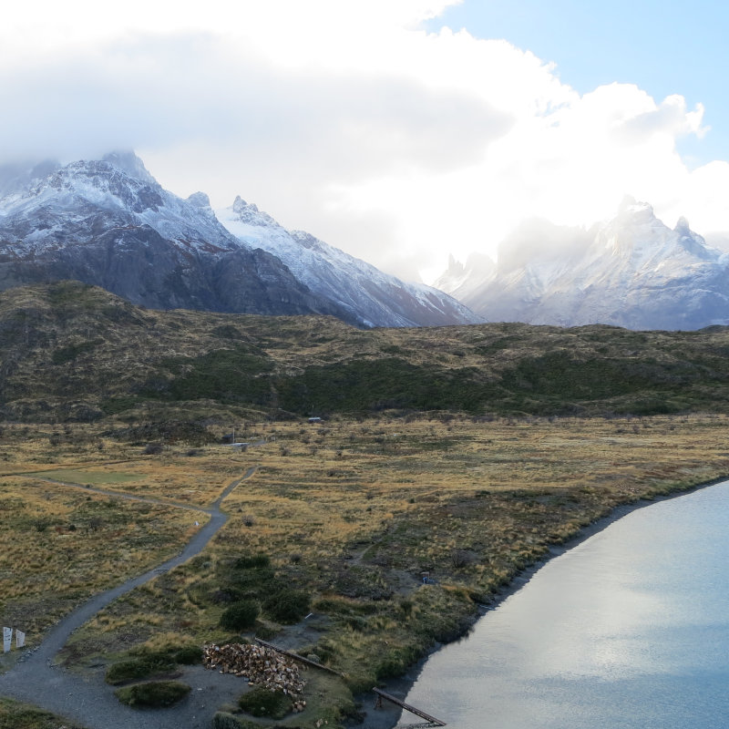
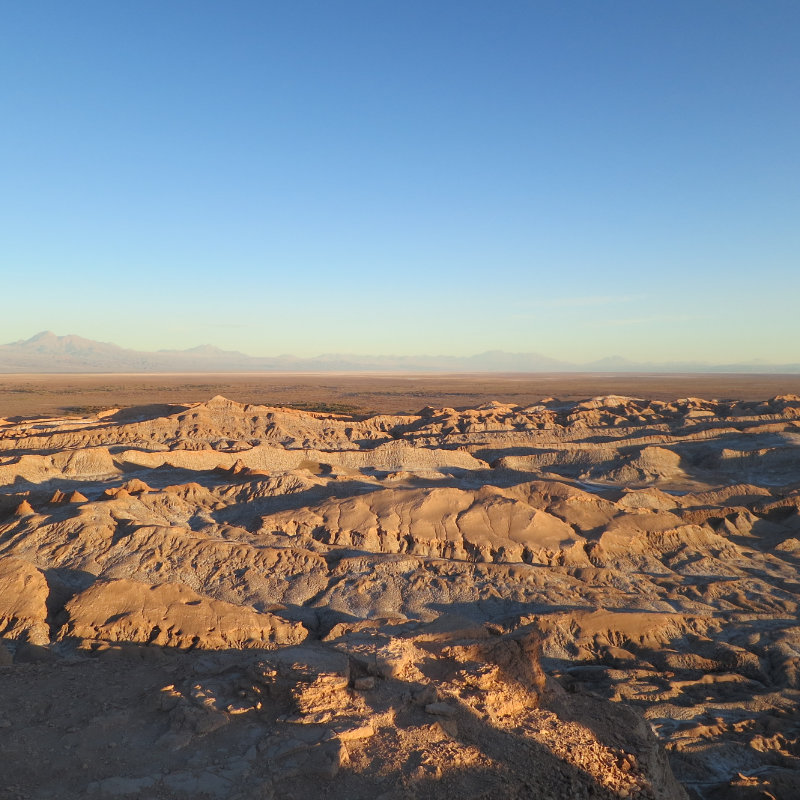
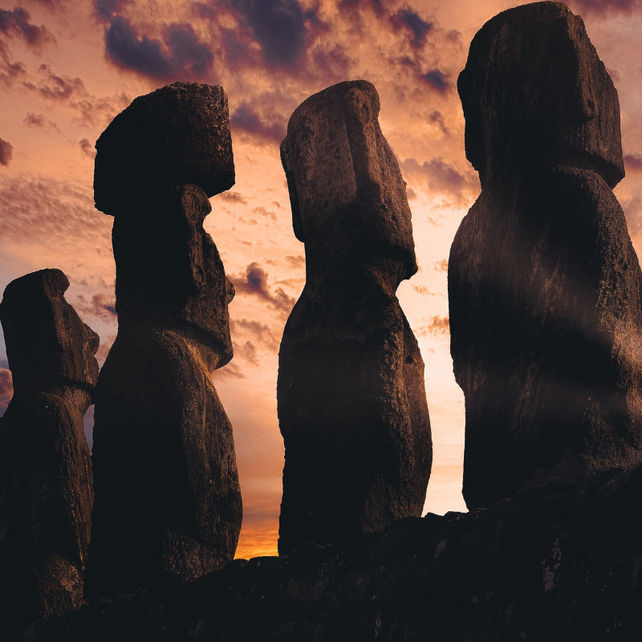
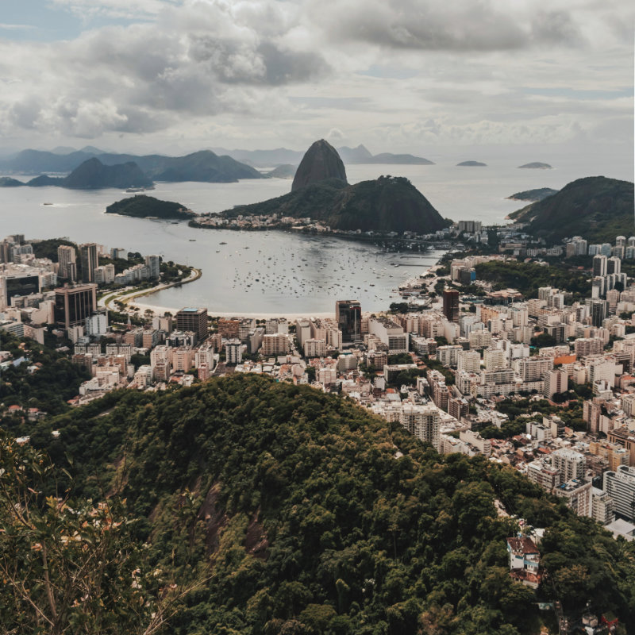
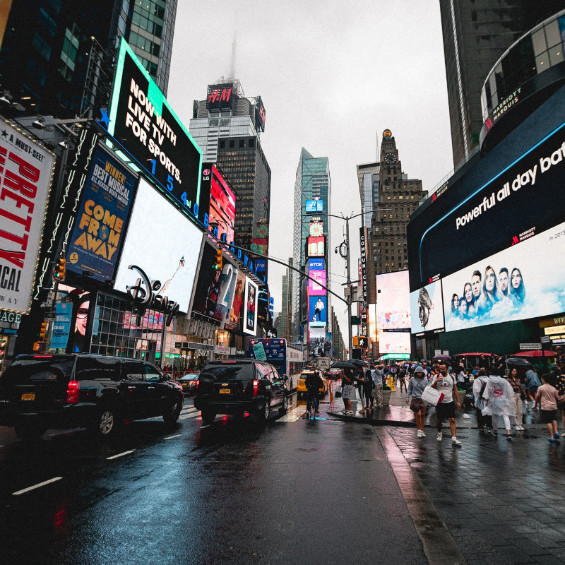
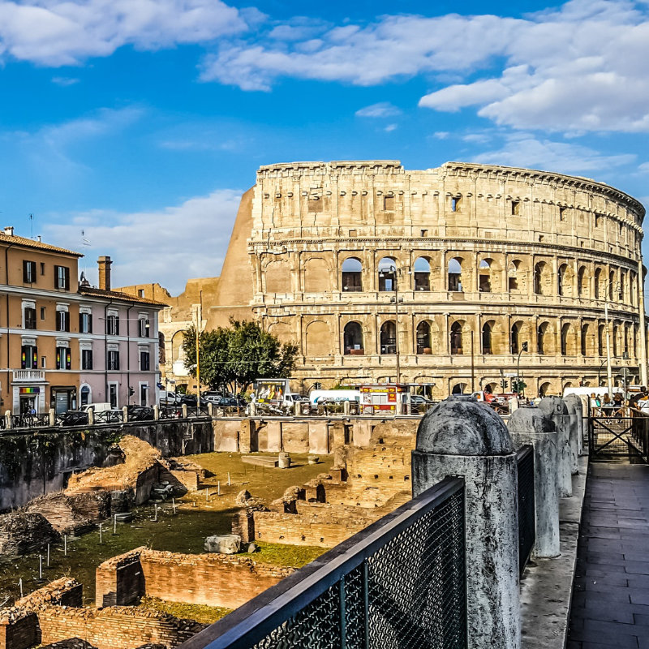
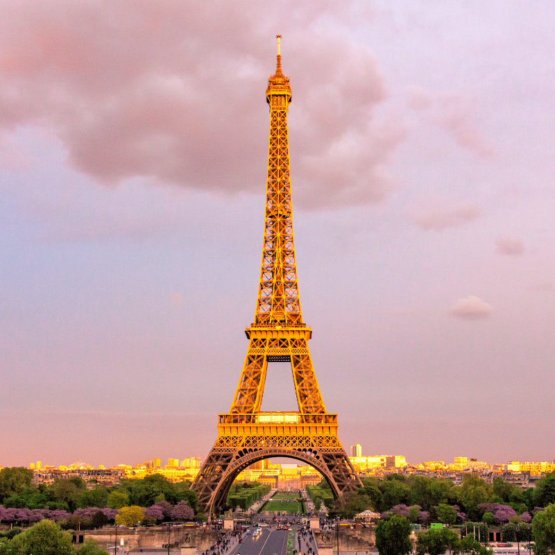
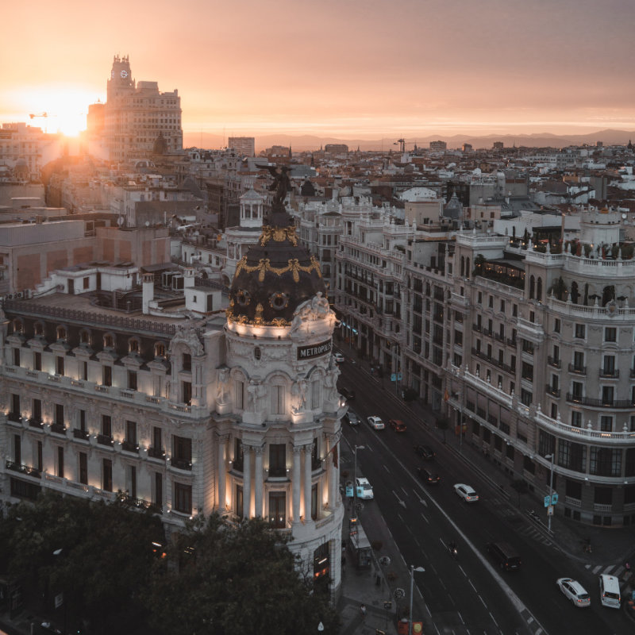

Conoce nuestros Pack y Promociones
Pack Egipto Faraónico
Programa 7 días recorriendo el fértil valle del río Nilo.
Visita las colosales pirámides de Guiza y la Gran Esfinge,
el Valle de los Reyes y el Templo de Karnak...
Pack Antartida
Programa de 8 días para visitar Antártida Chilena.
Incluye comidas a bordo, guías, excursiones.
Tarifas, recomendaciones, lugares que visitará...
Recorre la Carrera Austral
Programa 8 días recorriendo la Carretera Austral.
Visitaremos las Catedrales de Mármol, el hermoso pueblo de Caleta Tortel, la Laguna San Rafael...
Lee acerca de nuestros destinos
Torres del Paine
El Parque Nacional Torres del Paine, en la región de la Patagonia de Chile, es conocido por sus altas montañas, los témpanos de azul brillante que se aferran a los glaciares y las pampas doradas (praderas) que albergan fauna poco común, como los guanacos.
Valle de la Luna
El valle de la Luna es un paraje desértico y punto de atracción turística, ubicado en el desierto de Atacama, a 13 km al oeste de San Pedro de Atacama y a 110 km al SE de Calama, perteneciente a la región de Antofagasta. En 1982 fue declarado santuario de la naturaleza y es parte de la reserva nacional Los Flamencos.
Rapa Nui
Isla de Pascua o Rapa Nui (en idioma rapanui: Rapa Nui, "Rapa grande"), es una isla de Chile, perteneciente a la Región de Valparaíso, ubicada en la Polinesia, Oceanía, en medio del océano Pacífico a 3700 kilómetros de Caldera. La isla es uno de los principales destinos turísticos del país debido a su naturaleza y la cultura ancestral de la etnia rapanui, cuyo más notable vestigio corresponde a enormes estatuas antropomorfas conocidas como moais.
Rio de janeiro
Río de Janeiro, fundada como São Sebastião do Rio de Janeiro, es una ciudad, municipio brasileño y capital del estado homónimo, ubicada en el sureste del país. Es la segunda ciudad más poblada de Brasil después de São Paulo. Río de Janeiro atrae gran cantidad de turismo nacional e internacional, que llega a la ciudad en busca de sus playas, su variada oferta cultural y su animada vida nocturna.
New York
Nueva York es la ciudad más poblada de los Estados Unidos y una de las más pobladas del mundo. La ciudad tiene muchos lugares y edificios reconocidos por todo el mundo. Por ejemplo, la estatua de la Libertad, ubicada en la isla homónima, y la isla de Ellis, que recibió a millones de inmigrantes que llegaban a Estados Unidos a finales del siglo XIX y comienzos del XX. Wall Street ha sido uno de los principales centros mundiales de finanzas desde la Segunda Guerra Mundial y es la sede de la Bolsa de Nueva York.
Roma
Roma es una ciudad italiana, capital de la región del Lacio y de Italia. Es el municipio más poblado de Italia y la tercera ciudad más poblada de la Unión Europea. Por antonomasia, se la conoce desde la Antigüedad como la Urbe (Urbs). También es llamada "La Ciudad Eterna" (en italiano: Città Eterna).
Paris
Conocida también como la «Ciudad de la Luz» (la Ville lumière), es el destino turístico más popular del mundo, con más de 42 millones de visitantes extranjeros por año. Entre los monumentos de la ciudad figuran la Torre Eiffel, la catedral de Notre Dame, la avenida de los Campos Elíseos, el Arco de Triunfo, la basílica del Sacré Cœur, el Palacio de Los Inválidos, el Panteón, el arco de la Defensa, la ópera Garnier y el barrio de Montmartre, entre otros.
Barcelona
Barcelona ofrece al visitante la posibilidad de recorrer a pie desde las ruinas romanas y la ciudad medieval hasta los barrios del modernismo catalán, con sus edificios característicos, sus manzanas cuadradas de cantos seccionados, sus calles arboladas y sus anchas avenidas.
